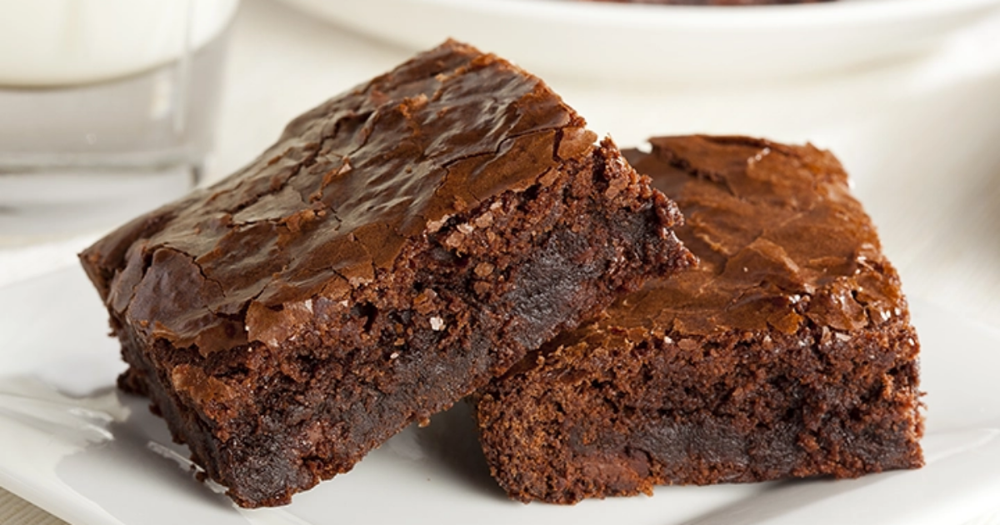
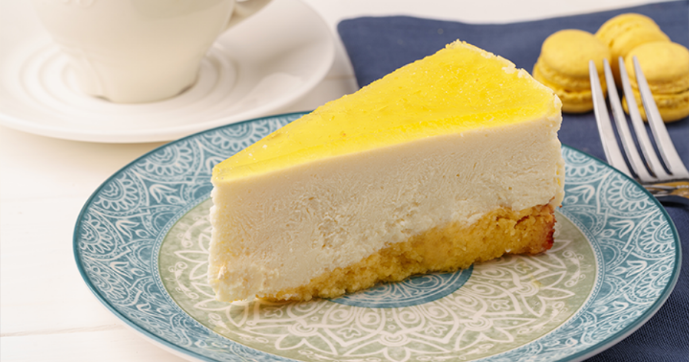

Künefe, Osmanlı dönemine kadar uzanan, özellikle Hatay ve çevresine özgü
olduğu bilinen bir tatlıdır. İnce tel kadayıf ve tuzsuz taze peynir
kullanılarak yapılır ve fırında veya tavada pişirildikten sonra üzerine
sıcak şerbet dökülerek servis edilir. Genellikle fıstıkla süslenir ve
sıcak tüketilir. Künefenin tarihi, Levant bölgesine kadar gider ve Arap
mutfağındaki benzer tatlılarla kültürel bir bağ kurar. Günümüzde
Türkiye’nin yanı sıra Orta Doğu mutfağında da popülerdir.
Malzemeler
250 gram tel kadayıf
150 gr tuzsuz künefe peyniri
4 yemek kaşığı tereyağı
1 çay kaşığı pekmez
Şerbeti İçin
2 Su bardağı Su
2 su bardağı toz şeker
1 çay kaşığı limon suyu
Üzeri İçin
Toz Antep Fıstığı
Süt kaymağı veya dondurma (isteğe bağlı)
Tarif
Şerbet için su ve şeker bir tencereye alınarak kaynatılır;
kaynamaya başlayınca 1 çay kaşığı limon suyu eklenir ve 10-15
dakika daha kaynatılıp soğumaya bırakılır.
Tereyağı kısık ateşte eritilir, donması beklenir ve altında
biriken tereyağı suyu kullanılmaz.
Hafif donmuş tereyağına 1 çay kaşığı pekmez eklenip muhallebi
kıvamına gelene kadar karıştırılır.
Yağlanacak tepsi veya tavaya pekmezli tereyağı karışımı sürülür.
Kadayıf tel tel ayrılır, bıçakla 1 cm genişliğinde kesilir ve
iki parçaya bölünür.
Kadayıfın bir kısmı tepsinin dibine boşluk kalmayacak şekilde
serilir.
Kadayıfın üzerine rendelenmiş peynir yayılır ve ikinci kadayıf
katı peynirin üzerine kapatılır.
Kadayıfın üzerine başka bir tepsiyle veya elle bastırılarak
sıkıştırılır.
Kısık ateşte tepsi çevrilerek kadayıfın iki tarafı da eşit
şekilde kızartılır.
Şerbet, kenarlarından başlanarak tatlının üzerine dökülür ve
isteğe göre Antep fıstığı veya kaymakla servis edilir. Afiyet
olsun!
Yemek Fotoğrafı
Yemek Videosu
Şekerpare
Şekerpare tatlısı, Osmanlı mutfağından günümüze kadar gelen köklü bir
tatlıdır. Osmanlı saray mutfağında özellikle bayramlar ve özel günlerde
sofraları süsleyen şerbetli tatlılardan biri olan şekerpare, ismini
"şeker" ve "pare" kelimelerinden alır; yani tatlı bir parçayı ifade
eder. Ana malzemeleri un, irmik, tereyağı, yumurta ve pudra şekeri olan
şekerpare, üzerine dökülen limonlu şerbetle tatlandırılır ve genellikle
üzerine badem veya fındık konularak süslenir. Şekerpare, hafif yapısı ve
hoş aromasıyla günümüzde de Türk mutfağının vazgeçilmez tatlılarından
biridir.
Malzemeler
125 gram oda sıcaklığında tereyağı
Yarım su bardağı pudra şekeri
3 silme yemek kaşığı irmik
1 adet yumurta
2 su bardağı un
1 paket vanilya
1 çay kaşığı silme kabartma tozu
Yarım çay bardağı fındık
2 su bardağı şeker
3 su bardağı su (600 ml)
4-5 damla limon suyu
Tarif
Şerbet için tencereye şeker ve suyu alıp karıştırarak kaynamaya
bırakın. 10 dakika kaynadıktan sonra limon suyu ekleyip 5 dakika
daha kaynatın ve soğumaya bırakın.
Oda sıcaklığındaki tereyağı ve pudra şekerini karıştırın,
yumurtayı ekleyip tüm malzemeyi iyice harmanlayın.
Karışıma irmik, kabartma tozu, vanilya ve unu azar azar ekleyip
yoğurun.
Hamurdan ceviz büyüklüğünde parçalar koparıp yuvarlayın ve
tepsiye dizin.
Tatlıların ortasına isteğe bağlı fındık, ceviz veya badem
batırın.
180 derece önceden ısıtılmış fansız fırında 30 dakika pişirin.
Fırından çıkan sıcak tatlının üzerine soğuyan şerbeti eşit
şekilde dökün.
Tatlı şerbetini çektikten sonra dinlendirin ve servis yapın.
Afiyet olsun!
Yemek Fotoğrafı
Yemek Videosu
Sütlaç
Sütlaç, Türk mutfağının en eski sütlü tatlılarından biri olup kökenleri
Orta Asya’ya kadar uzanır. Göçebe Türk topluluklarının süt ve pirinçle
yapılan basit tatlılarla başlayan gelenek, Osmanlı saray mutfağında
rafine edilerek günümüzdeki halini almıştır. Ana malzemeleri süt,
pirinç, şeker ve vanilin olan sütlaç, bazen pirinç unu veya nişastayla
kıvamlandırılır. Genellikle fırında üzeri kızartılarak veya sade şekilde
sunulur. Hem hafif hem besleyici olması nedeniyle tarih boyunca
sofralarda özel bir yere sahip olmuştur.
Malzemeler
1 lt süt
2 çay bardağı pirinç
1 litre su
3 yemek kaşığı pirinç unu
1,5 -2 su bardağı toz şeker (eğer çok şekerli sevmiyorsanız 1,5
bardak kullanabilirsiniz)
1 su bardağı süt
Karabiber
tarçın
Tarif
Sütlaç yapmak için öncelikle pirinci yıkayıp su ile ateşe koyun.
Pirinçler uzayıp suyu çekene kadar kaynatın. Ocağı çok yüksek
ateşte açarak pirinçleri yakmamaya dikkat edin.
Ardından soğuk sütü ekleyin. 1-2 defa karıştırıp, kaynamasını
bekleyin.
Bu arada bir kasede pirinç ununu 1 su bardağı soğuk süt ile
ezin. Topak kalmamasına mutlaka dikkat edin.
Tencerede kaynamakta olan sütten 1-2 kepçe alıp kaseye ekleyin.
(pirinç unu ılınmış olmalı).
Pirinç ununu tencereye ekleyin, ara sıra karıştırarak 10 dakika
kadar pişirin
Toz şekeri ilave edip karıştırın ve 1-2 taşım daha kaynatın.
Sütlacı kaselere paylaştırın.
Soğuyunca sütlaçların üzerlerine tarçın serperek servis
edebilirsiniz. Afiyet olsun.
Yemek Fotoğrafı
Yemek Videosu
Kazandibi
Kazandibi, Osmanlı saray mutfağından günümüze uzanan özel bir sütlü
tatlıdır ve adını tencerenin dibinde karamelize edilen kısmından alır.
Sultanların sofralarını süsleyen bu tatlı, halk arasında da hızla
yayılarak Türk mutfağının vazgeçilmezlerinden biri haline gelmiştir. Ana
malzemeleri süt, şeker, pirinç unu ve nişasta olan kazandibi, ince ve
yanık karamelle kaplanmış alt yüzeyiyle karakteristik bir lezzete
sahiptir. Hafif yapısı ve hoş aroması sayesinde sıcak yaz günlerinde
serinletici bir tatlı olarak tercih edilir.
Malzemeler
6 su bardağı süt
2 yemek kaşığı nişasta
1 su bardağı un
1 su bardağı şeker
1 yemek kaşığı tereyağı
1 paket vanilya
2 Diş rendelenmiş sarımsak
1/2 Limon(yarım)
1 Çay kaşığı karabiber
1 Tatlı kaşığı tuz
8-9 Su bardağı su (tavuğun kendi suyunu da kullanıyoruz)
Tarif
Öncelikle orta boy bir tencereye bütün malzemeleri alarak
karıştırıyoruz.
Muhallebi elde ediyoruz. En son tereyağını ve vanilyasını
dökerek muhallebimizi 5 dk. kadar pişiriyoruz.
Orta boy alüminyum tepsiye bolca tereyağı sürüyoruz ve 3 yemek
kaşığı kadar tepsiye şeker döküyoruz.
Her yeri eşit olmasına özen gösterin
Sonra pişmiş muhallebiyi tepsiye döküyoruz ve orta ateşte
sürekli olarak çevirerek muhallebiyi pişiriyoruz.
25-30 dk. yeterli burada önemli olan tepsiyi sürekli çevirerek
kontrollü pişirmek kenar kısımların da pişmesine özen göstermek
biraz dibi tutan muhallebinin kokusu biraz çıkar.
O zaman hemen ocaktan alıyoruz ve soğumaya bırakıyoruz.
Soğuduktan sonra 1-2 saat de buzdolabında bekletiyoruz.
Sonra istediğimiz gibi dilimleyip servis yapabilirsiniz. Afiyet
olsun.
Yemek Fotoğrafı
Yemek Videosu
Yalancı Tavuk Göğsü
Tavukgöğsü, Osmanlı İmparatorluğu dönemine dayanan tarihi bir tatlıdır
ve saray mutfağında icat edilmiştir. Adını içinde kullanılan tavuk göğsü
etinden alır; ancak tavuk eti tatlıda hissedilmez, yalnızca farklı bir
doku yaratmak için kullanılır. Ana malzemeleri süt, şeker, pirinç unu,
nişasta ve tavuk göğsüdür. Tatlının hazırlık süreci, tavuk etinin iyice
haşlanıp didiklenmesi ve ardından sütlü karışıma eklenmesiyle başlar.
Osmanlı döneminde oldukça değerli bir tatlı olarak bilinen tavukgöğsü,
günümüzde Türk mutfağının ilginç ve hafif sütlü tatlıları arasında yer
alır.
Malzemeler
125 g tereyağı (isteğe göre margarin ile de karıştırabilirsiniz)
1 su bardağı un
1,5 su bardağı şeker
1 lt süt
1 paket vanilya
Tarif
İlk olarak tenceremize tereyağımızı alalım ve kısık ateşte
yağımızı eritelim.
Yağımız eridikten sonra üzerine unu ilave edelim ve kokusu
çıkana kadar yaklaşık 4-5 dakika karıştırarak kavuralım.
Unumuzu tel çırpıcı ile karıştırırken bir yandan üzerine sütü
ekleyelim. Burada mutlaka ununuzu karıştırmalısınız aksi halde
topaklanma olabilir.
Üzerine şekeri ilave ederek muhallebimiz kıvam alıp koyulaşana
kadar karıştıralım.
Koyulaşan muhallebimizi ocaktan alalım, sonrasında vanilya ilave
ederek 3-4 dakika mikserle çırpalım.
Hazırladığımız muhallebimizi 22 cm boyutlarındaki ıslattığımız
borcama dökerek üzerini bir spatula yardımı ile düzeltelim. Oda
sıcaklığına gelmesi için bekletelim.
Oda ısısına geldikten sonra üzerini streçleyelim, buzdolabında
2-3 saat dinlendirelim.
Dinlenen tatlımızı dolaptan alalım, yanlarına bastırarak
havasını çıkartalım ve servis tabağına ters çevirerek
çıkartalım.
Üzerini arzuya göre tarçın, hindistan cevizi veya file Antep
fıstığı ile süsleyelim. Ben pişirme kağıdından ince şeritler
kestim, tatlının enine gelecek şekilde üzerine yerleştirdim.
Ardından her yerini kapatacak şekilde üzerine tarçın serptim ve
şeritlerimi dikkatli bir şekilde çıkarttım.
Sonrasında tekrar kestiğimi pişirme kağıtlarını tatlının boyuna
doğru aralıklı olarak yerleştirdim ve tarçın döktükten sonra
dikkatlice çıkarttım ve çok hoş bir görüntü elde ettim. Ancak
siz dilediğiniz şekilde süsleyebilirsiniz. Afiyet olsun!
Yemek Fotoğrafı
Yemek Videosu
Keşkül
Keşkül, Osmanlı İmparatorluğu'ndan günümüze gelen klasik bir sütlü
tatlıdır ve adını Osmanlıca "kâse" anlamına gelen "keşkül" kelimesinden
alır. Keşkül, özellikle saray mutfağında popüler olmuş ve zamanla halk
arasında da yaygınlaşmıştır. Temel malzemeleri süt, toz şeker, pirinç
unu veya buğday nişastasıdır. Genellikle üzerine dövülmüş badem, fındık
veya hindistancevizi gibi kuru yemişler eklenerek zenginleştirilir.
Hafif ve kremsi yapısıyla keşkül, tatlı olarak hem besleyici hem de
sindirimi kolay bir seçenek sunar. Osmanlı'dan günümüze kadar gelen bu
tatlı, özellikle iftar ve bayram sofralarına lezzet katar.
Malzemeler
1 litre süt
1 su bardağı şeker
1 adet yumurta sarısı
1 paket vanilya
1 çay bardağı badem tozu
1 çay bardağı Hindistan cevizi
1 yemek kaşığı pirinç unu
2 yemek kaşığı nişasta
Tarif
Süt , şeker, yumurta sarısı, nişasta ve pirinç unu tencereye
alınır ve çırpılır.
Badem tozu, Hindistan cevizi, ardından şekerli vanilin de
eklenerek iyice çırpılır.
Tencere orta ateşe konulur ve devamlı çırparak koyulaşıp göz göz
olana kadar pişirilir.
Kaselere pay edilir ve oda ısısına gelene kadar dışarıda sonra
buzdolabında tamamen soğutulur ve servis edilir. AFİYET OLSUN
Yemek Fotoğrafı
Yemek Videosu
Güllaç
Güllaç, Osmanlı İmparatorluğu döneminden günümüze kadar ulaşan,
özellikle Ramazan aylarının vazgeçilmezi olan hafif bir tatlıdır. İlk
olarak nişasta ve su ile hazırlanan yufkaların kurutulup uzun süre
saklanmasıyla ortaya çıkmıştır. Tatlı, bu yufkaların süt ve şekerle
ıslatılıp arasına ceviz konulmasıyla hazırlanır. Üzerine genellikle nar
taneleri ve fındık ya da ceviz serpilerek süslenir. Gülsuyu eklenerek
hoş bir aroma kazandırılan güllaç, hafif yapısı ve serinletici
özelliğiyle özellikle sıcak yaz aylarında tercih edilen bir tatlıdır.
Osmanlı döneminde saray mutfağında özel bir yere sahip olan güllaç,
bugün de aynı ilgiyle tüketilmektedir.
Malzemeler
12 yaprak güllaç
1,5 litre süt
2 su bardağı şeker
Çekilmiş ceviz
2 yemek kaşığı gül suyu (isteğe göre)
Toz Antep fıstığı
Kiraz şekerlemesi
Tarif
Güllaç tatlısını yapmak için; öncelikle süt ve şekeri tencereye
alarak ısıtıyoruz, şekerler tamamen erisin. Bu aşamada sütü çok
fazla ısıtmanıza gerek yok, şekerin erimesi yeterli olacaktır.
Daha sonra sütü oda sıcaklığında ılınmaya bırakıyoruz. Eğer el
yakmayacak şekilde ısıttıysanız tekrar ılıması için beklemenize
gerek olmayacaktır. Süt kaynar olursa tatlınız hamur olur o
nedenle el yakmayacak şekilde olmalı.
Güllaç yaprağının parlak kısmı üste gelecek şekilde ilkini
derince bir tepsiye koyuyoruz.
Üzerine her yanı ıslanacak şekilde bir iki kepçe süt döküyoruz.
Altı güllaç yaprağı için aynı işlemi tekrarlayalım ve 6. katı da
ıslattıktan sonra bu kata ceviz serpelim ve üzerine diğer güllaç
yapraklarını aynı şekilde ıslatarak serelim.
Kalan şekerli sütün içerisine 2 yemek kaşığı gül suyu ekleyip
tatlının üzerine gezdirelim. Burada kullandığınız gül suyunun
kozmetik ürünü olmamasına dikkat etmelisiniz.
Hazırladığımız tatlımızı 2 saat kadar buzdolabında muhafaza
edelim.
En az 2-3 saat dinlendirdikten sonra üzerini isteğe göre
süsleyerek servis edebilirsiniz. Ben toz antep fıstığı ve kiraz
şekerlemeleri ile süsledim. Afiyet olsun!
Yemek Fotoğrafı
Yemek Videosu
Trileçe
Trileçe, Latin Amerika kökenli olup özellikle Arnavutluk ve Balkan
mutfağında popüler hale gelmiş bir tatlıdır. İsmini "üç süt" anlamına
gelen İspanyolca tres leches ifadesinden alır. Türkiye’de son yıllarda
oldukça sevilen tatlı, üç farklı süt türü (genellikle inek, keçi ve
manda sütü) ile ıslatılan yumuşak bir kekten oluşur. Üzerine karamel,
çilek sosu ya da farklı meyve püreleri dökülerek servis edilir. Hafif ve
nemli dokusuyla damaklarda unutulmaz bir tat bırakan trileçe, Latin
Amerika'dan başlayıp Balkanlar ve Türkiye sofralarına kadar ulaşan
uluslararası bir lezzettir.
Malzemeler
5 Adet yumurta
1 su bardağından 1 parmak eksik şeker
1,5 su bardağı un
1 paket kabartma tozu
1 paket vanilya
Sütlü Sosu İçin
3,5 su bardağı süt
3 yemek kaşığı toz şeker
200 g sıvı krema
Karamel Sosu İçin
1 çay bardağı şeker
1 yemek kaşığı tereyağı
200 g sıvı krema
Üzeri İçin
1 paket krem şanti
Tarif
Yumurtayı ve şekeri boza kıvamına gelene kadar çırpın, ardından
un, kabartma tozu ve vanilyayı ekleyip karıştırarak yağlı kağıt
serili kaba dökün ve 170°C’de 10 dakika, 150°C’de 30 dakika
pişirin.
Sütlü sos için süt, şeker ve kremayı karıştırıp buzdolabında
bekletin.
Karamel sos için şekeri eritin, tereyağı ekleyip karıştırın,
ardından sıvı kremayı ekleyerek kıvam alıncaya kadar pişirin.
Ilıyan keki ters çevirip yağlı kağıdı çıkarın, çatalla delikler
açarak soğuk sütlü sosu üzerine dökün.
Köpürtülmüş krem şantiyi kekin üzerine yayın, birazını süsleme
için ayırın.
Hazırladığınız karamel sosu krem şantinin üzerine dökün.
Ayırdığınız krem şanti ile süs yaparak kürdanla şekil verin.
Tatlıyı 5-6 saat dinlendirin.
Dilimleyip servis ederek afiyetle tüketin.
Yemek Fotoğrafı
Yemek Videosu
Supangle Tatlısı
Supangle, adını Fransızca "soufflé" kelimesinden alan, Osmanlı
döneminden itibaren Türk mutfağında yer bulmuş bir tatlıdır. İlk olarak
Avrupa mutfağından esinlenerek ortaya çıkan bu tatlı, Osmanlı saray
mutfağı aracılığıyla yaygınlaşmıştır. Ana malzemeleri süt, un, kakao,
şeker ve tereyağı olan supangle, üzerine genellikle rendelenmiş çikolata
veya hindistancevizi serpilerek servis edilir. Hafif ama yoğun çikolata
tadıyla sevilen bir tatlı olan supangle, soğuk olarak servis edildiğinde
özellikle sıcak yaz aylarında ferahlatıcı bir seçenek sunar.
Malzemeler
1 litre süt
2 adet yumurta sarısı
6 yemek kaşığı toz şeker
3 tepeleme yemek kaşığı kakao
2 tepeleme yemek kaşığı un
2 yemek kaşığı nişasta
2 yemek kaşığı tereyağı
2 paket bitter çikolata (120 gr)
Yarım su bardağı soğuk su (100 ml)
Kakaolu kek
Tarif
İlk olarak daha sonra kullanmak için suyumuzu buzdolabına
kaldıralım ve soğutalım.
Daha sonra uygun bir tencereye nişasta, un, toz şeker, kakao ve
yumurta sarılarını alarak karıştıralım.
Yavaş yavaş sütü ilave ederek pürüzsüz bir hal alıncaya kadar
karıştıralım.
Supanglemizi ocağa alalım ve karıştırarak koyulaşıp göz göz
oluncaya kadar pişirelim.
Kıvam alan supanglemizi ocaktan alalım, içerisine tereyağı ve
çikolatamızı ekleyerek her ikisi de eriyene kadar karıştıralım.
Son olarak buzdolabına kaldırdığımız suyu ilave edelim ve
karıştıralım.
Hazır olan supanglemizi soğuması için bir kenara alalım. Ara ara
karıştırmayı unutmayalım.
Tatlımızın tabanında kullanmak için kakaolu kekleri minik minik
doğrayalım ve bir kaç parçasını kuplara yerleştirelim.
Sonrasında supanglemizi kuplara paylaştıralım ve buzdolabına
kaldırarak dinlenmeye bırakalım.
Bir kaç saat sonrasında supanglelerimizi dolaptan alalım ve
dilediğimiz şekilde süsleyerek servis edelim. Afiyet olsun!
Yemek Fotoğrafı
Yemek Videosu
Waffle
Waffle, kökeni Orta Çağ Avrupa’sına dayanan ve özellikle Belçika
mutfağıyla özdeşleşmiş bir tatlıdır. İlk olarak demir plakalar arasında
pişirilen basit hamurlar olarak ortaya çıkan waffle, zamanla gelişerek
günümüzdeki halini almıştır. Ana malzemeleri un, yumurta, süt, şeker,
kabartma tozu ve tereyağı olan bu tatlı, özel bir waffle makinesinde
pişirilir. Üzerine genellikle çikolata, taze meyveler, dondurma veya
şuruplar eklenerek zenginleştirilir. Hafif gevrek dokusu ve çok yönlü
süsleme seçenekleriyle waffle, dünyanın dört bir yanında sevilen bir
tatlıdır.
Malzemeler
2 adet yumurta
4 yemek kaşığı toz şeker
1 su bardağı süt
1/4 (çeyrek) su bardağı sıvı yağ
1 paket vanilya
1 paket kabartma tozu
Bir çimdik tuz
2 su bardağı un
Üzeri İçin
Çilek,Kivi,Muz
Çikolata
Fındık Kırığı
Toz Fıstık
Tarif
Waffle hamuru yapmak için; öncelikle yumurta ve şekeri iyice
köpürünceye kadar çırpalım.
Süt, sıvı yağ, tuz, kabartma tozu, vanilya ve unu ekleyip tekrar
çırpalım. Waffle hamur hazır, pişirme işlemine geçebiliriz.
Waffle makinesini ısıtıp 1 kepçe kadar hamuru makineye
boşaltalım. Kapağını kapatıp pişmeye bırakalım. Pişirme işlemi
kullandığınız waffle makinesine göre farklılık gösterebilir.
Burada makinenizin kullanım kılavuzunu dikkate almanızı
öneririm.
Waffle hamuru pişerken meyvelerimizi dilimleyelim. Mevsimine
göre hangi meyveyi kullanacağınızı kendiniz seçebilirsiniz. Ben
en çok tercih edilen çilek muz ve kivi ile hazırlayacağım.
Pişen waffle hamuru üzerine önce çikolatamızı sürelim. Üzerine
istediğimiz meyveleri dizelim. Ardından fındık kırıkları ve
fıstıkla süsleyelim. Waffle servise hazır. Şimdiden afiyet olsun
:)
Yemek Fotoğrafı
Yemek Videosu
Magnolia
Magnolia tatlısı, kökeni New York'taki ünlü Magnolia Bakery'e dayanan ve
kısa sürede popülerleşen bir tatlıdır. İlk olarak muzlu puding ve
bisküvilerin katmanlar halinde hazırlanmasıyla ortaya çıkan bu tatlı,
hafif ve kremamsı yapısıyla beğeni toplamıştır. Türkiye’de orijinal
tarif uyarlanarak genellikle süt, nişasta, şeker, krem şanti ve bisküvi
gibi malzemelerle yapılır; muz, çilek veya çeşitli meyvelerle süslenir.
Cam kaplarda estetik bir şekilde sunulan Magnolia, hafif ve lezzetli bir
tatlı seçeneği olarak hızla Türk mutfağında da kendine yer bulmuştur.
Malzemeler
1 litre süt
1 su bardağı şeker
1 adet yumurta sarısı
2 yemek kaşığı un (Tepeleme)
2 yemek kaşığı mısır nişastası
1 paket vanilya
1 Kutu krema
1. 5 paket bisküvi (Petibör kullandım)
Muz, kivi, çilek (Ne isterseniz)
Tarif
Tencereye sütü, şekeri, yumurta sarısını, unu, nişastayı ve
vanilyayı koyup (krema hariç) çırpma teli ile karıştıralım.
Sonra ocağa alıp karıştırarak pişirelim.
Kaynayıp göz göz olunca ocaktan alıp ılımasını bekleyelim.
Bu arada bisküvileri rondada toz haline getirelim.
Ilıyan muhallebinin içine kremayı ilave edip mikserle çırpalım
kupların dibine bir miktar muhallebiden koyalım.
Üzerine 2 yemek kaşığı kadar bisküviden koyup tekrar üstüne
muhallebi koyup,bisküviden koyalım ve dilimlenmiş muz koyarak
süsleyelim ( istediğiniz şekilde süsleye bilirsiniz). Bütün
kupları bu şekilde hazırlayıp buzdolabında 4 -5 saat
beklektikten sonra servis yapabilirsiniz.
Yemek Fotoğrafı
Yemek Videosu
Brownie
Brownie, 19. yüzyıl sonlarında Amerika Birleşik Devletleri'nde ortaya
çıkmış, yoğun çikolatalı lezzetiyle dünya çapında ün kazanmış bir
tatlıdır. Efsaneye göre, brownie bir pastacının kek yaparken unutmaması
gereken bir malzemeyi karışıma eklemeyi unutmasıyla ortaya çıkmıştır.
Kek ile kurabiye arasında bir kıvam sunan bu tatlı, temel olarak
çikolata, tereyağı, şeker, yumurta ve az miktarda undan oluşur. İçine
ceviz, fındık veya çikolata parçaları eklenerek zenginleştirilebilir.
Nemli ve yoğun dokusuyla brownie, çikolata severlerin vazgeçilmez
tatlılarından biri haline gelmiştir.
Malzemeler
150 gram tereyağı
260 gram bitter çikolata (kullandığım çikolatanın kakao oranı
%57. kakao oranı yüksek çikolata kullanmaya dikkat edin) (sütlü
çikolatada kullanabilirsiniz. benim tercihim bitter çikolata
yönünde.)
3 yumurta
1 su bardağı toz şeker
1 su bardağı un
1 paket vanilya
1.5 yemek kaşığı kakao
Tarif
Tereyağı ve çikolatayı hazırlayın 150 gram tereyağını küçük
parçalara ayırıp eriterek fazla kızdırmamaya özen gösterin. 260
gram bitter çikolatayı küçük parçalara ayırın ve eritilmiş
tereyağına ekleyip çikolata sos kıvamına gelene kadar
karıştırarak eritin.
Yumurta ve şekeri çırpın Ayrı bir kapta 3 yumurta ve 1 su
bardağı toz şekeri 1-2 dakika hızlıca çırpın.
Karışımları birleştirin Çikolata ve tereyağı karışımını azar
azar yumurta-şeker karışımına ekleyin, malzemeler iyice karışana
kadar sürekli karıştırın.
Kuru malzemeleri ekleyin 1 su bardağı unu, 1 paket vanilyayı ve
1,5 yemek kaşığı kakaoyu eleyerek karışıma ekleyin.
Hamuru hazırlayın Spatula kullanarak, unu, vanilyayı ve kakaoyu
yanlardan üste itekleyerek iyice hamura yedirin.
Hamuru borcama dökün Yağlı kağıt serili 30x20 cm’lik borcama ya
da alternatif olarak 20x20 cm kare borcama hamuru yayın ve
üzerini düzleştirin.
Pişirme işlemi Önceden ısıtılmış 160 derece fansız fırında
brownienizin üzeri çatlayana kadar 30-35 dakika pişirin.
Dinlendirin Pişen browniyi fırından alıp oda sıcaklığında 1 saat
kadar dinlendirin.
Servis öncesi dinlendirme Brownie’yi bir gece oda sıcaklığında
dinlendirmeniz önerilir. Ancak daha hızlı tüketmek isterseniz, 1
saat dinlendikten sonra servis edebilirsiniz.
Sunum ve depolama Brownie’yi dilimleyip oda sıcaklığında
saklayın. Buzdolabında saklamaktan kaçının, çünkü tereyağı
donarak sertleşmesine neden olur. Afiyet olsun.
Yemek Fotoğrafı

Yemek Videosu
Limonlu Cheesecake
Cheesecake, kökenleri Antik Yunan’a dayanan ve ilk olarak Olimpiyat
sporcularına enerji vermek için yapılan bir tatlıdır. Daha sonra Roma
İmparatorluğu ve Avrupa üzerinden dünyaya yayılmıştır. Günümüzdeki
formunu 19. yüzyılda New York’ta krem peynirin keşfedilmesiyle
kazanmıştır. Temel içeriği krem peynir, şeker, yumurta ve bisküvi tabanı
olan cheesecake, fırında ya da soğuk şekilde hazırlanabilir. Limon,
çilek, çikolata gibi çeşitli soslarla zenginleştirilen cheesecake,
kremamsı dokusu ve hafif tatlılığıyla dünya genelinde sevilen bir
tatlıdır.
Malzemeler
100 gr yulaflı bisküvi
50 gr tereyağı
Yarım su bardağı fındık
2 paket labne peyniri (400 gr)
1 su bardağı toz şeker
1 paket vanilya
2 adet yumurta
1 paket krema (200 ml)
3 yemek kaşığı un
1 adet limon kabuğu rendesi
1 Su bardağı su
1 Yemek Kaşığı Nişasta
5 yemek kaşığı toz şeker
1 adet limon suyu
1 adet limon kabuğu rendesi
Çay kaşığının ucuyla zerdeçal
Tarif
Bisküvileri ve fındığı robottan geçirip un haline getirin.
Fındıklı bisküvileri bir kaba alıp, eritilmiş tereyağını
ekleyerek karıştırın.
Kelepçeli kalıbın tabanına pişirme kağıdı yerleştirip fazla
kısmı kesin.
Kreması için labne peyniri, sıvı krema, şeker, yumurta, un,
vanilya ve limon kabuğunu mikserle çırpın.
Hazırlanan kremayı bisküvili tabanın üzerine dökün, önceden
ısıtılmış 160°C fırında 1 saat pişirin.
Pişerken fırının yanına ısıya dayanıklı bir kapta su koyarak
çatlamayı önleyin.
Limon sosu için su, şeker, nişasta, limon suyu ve zerdeçalı
karıştırıp, pişirin.
Soğuyan sosu cheesecake'in üzerine dökün ve tatlınızı
dinlendirin, ardından servis edin.
Yemek Fotoğrafı

Yemek Videosu
Tiramisu
Tiramisu, İtalyan mutfağının en bilinen tatlılarından biridir ve kökeni
1960'ların sonunda İtalya'nın Veneto bölgesine dayanmaktadır. Adı,
İtalyanca "tirami su"dan gelir, bu da "beni kaldır" veya "beni
neşelendir" anlamına gelir. Tiramisu, genellikle kahveyle ıslatılmış
kedi dilli bisküvi (savoiardi), mascarpone peyniri, yumurta, şeker ve
kakao tozuyla yapılan bir tatlıdır. Zengin, kremsi yapısı ve kahve
aromalı tadı ile hem tatlı severler hem de kahve tutkunları için popüler
bir seçenektir.
Malzemeler
1 adet hazır pandispanya keki
2.5 su bardağı süt
3 yemek kaşığı toz şeker (tepeleme dolu)
3 yemek kaşığı un (tepeleme dolu)
1 adet yumurta
200 gram labne peyniri (1 paket)
1/2 (yarım) su bardağı sıcak su
3’ü bir arada hazır kahve
Kakao
Tarif
Öncelikle muhallebi için şeker, un, süt ve yumurta çırpılır.
Ocakta kaynayıncaya kadar karıştırılarak pişirilir.
Kaynadıktan sonra altı kapatılır ve daha hızlı soğuması için
ayrı bir kaba boşaltılır.
15 dk kadar bekleyip ılındıktan sonra labne peyniri ilave edilip
mikser ile pürüzsüz hale gelene kadar çırpılır.
Diğer taraftan sıcak su içinde hazır kahve çözdürülerek
hazırlanır ve hafif soğuması beklenir.
Servis tabağına pandispanya kekinin bir katı yerleştirilerek
kahvenin yarısı ile ıslatılır.
Üzerine kremanın yarısı ilave edilip güzelce yayılır.
Kalan kahve ile üst kat da ıslatıldıktan sonra pandispanyanın
ikinci katı kremanın üzerine kapatılır.
Kalan krema pastanın üzerine dökülerek pastanın üzeri ve
kenarları güzelce spatula veya pasta sıvama aparatı ile
kapatılır.
Son olarak pastanın üzerine süzgeç yardımı ile kakao serpilir.
Buzdolabında birkaç saat mümkünse 1 gece dinlendirildikten sonra
dilimlenerek servis edilir.